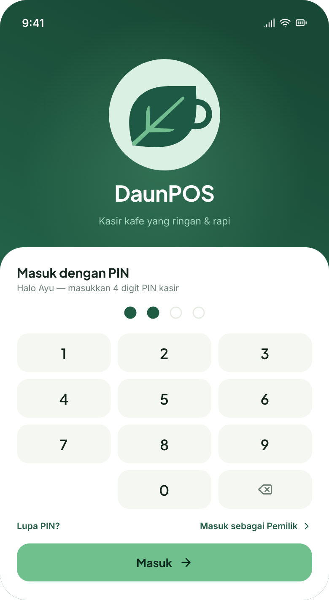
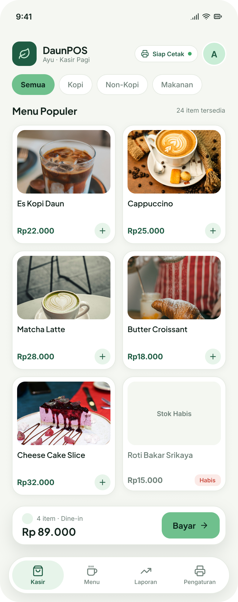
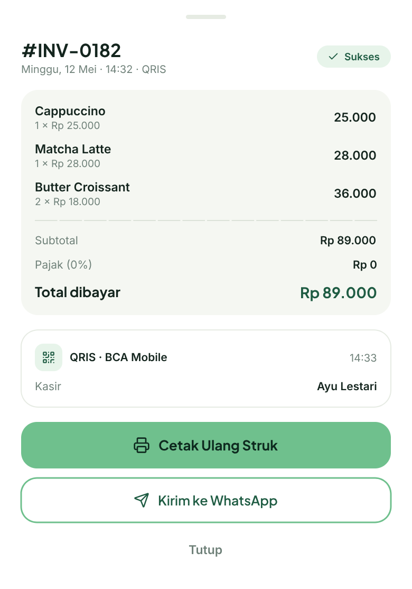
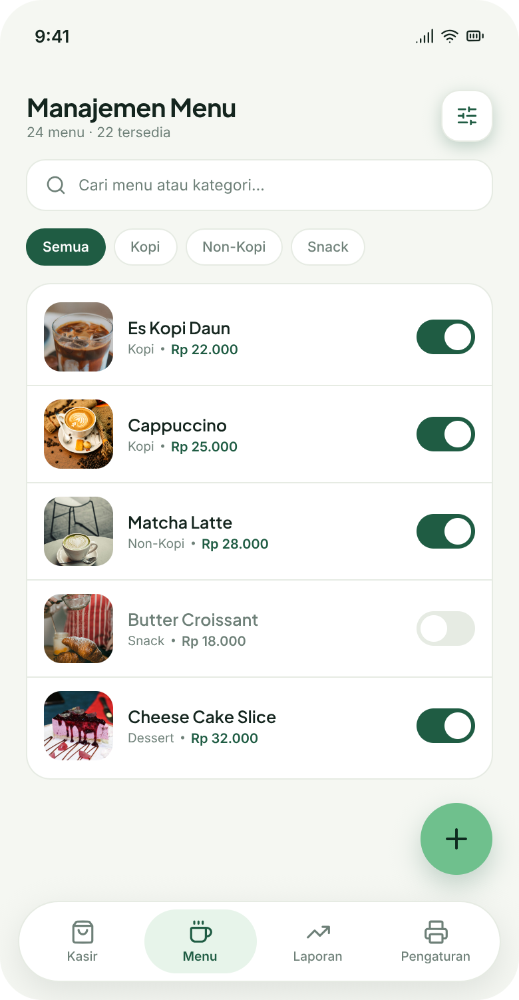
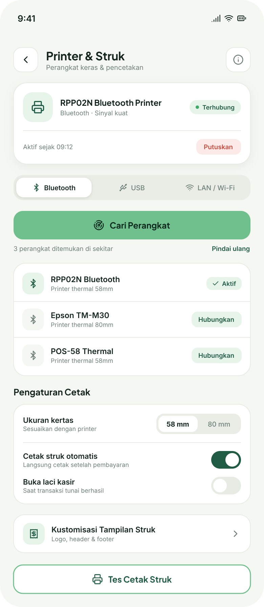
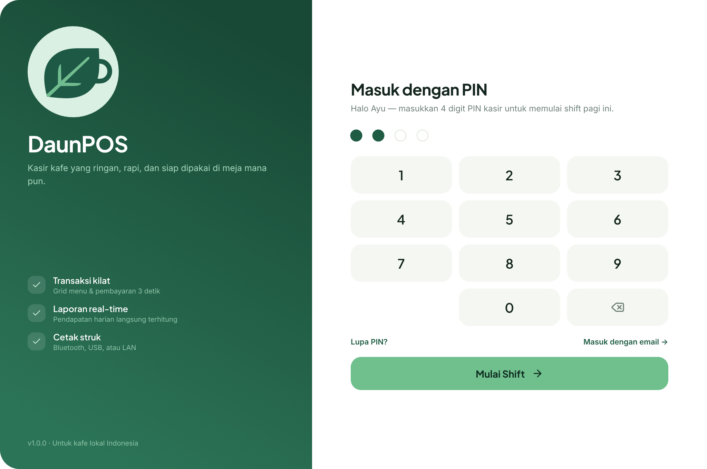
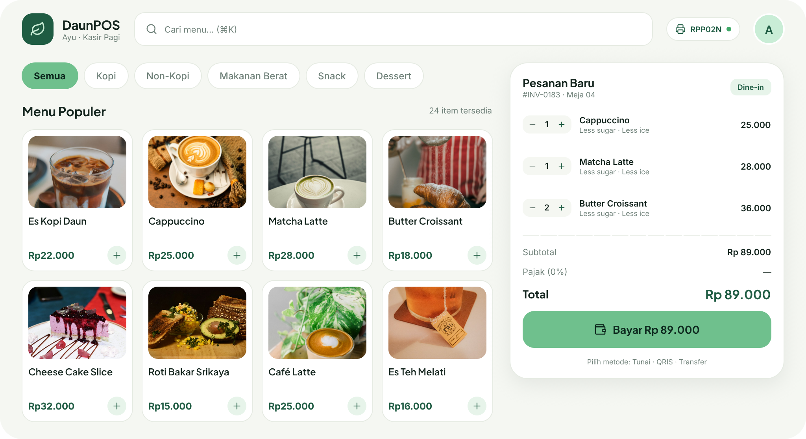
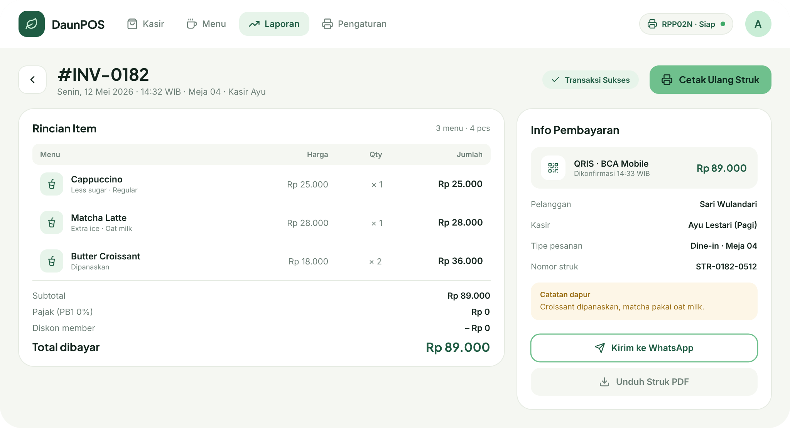
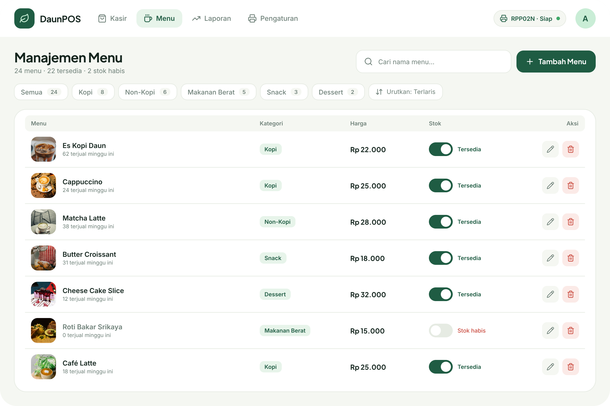

Phone — 390 px








Tablet — 1024 px








Design kit aplikasi kasir kafe untuk Android — smartphone & tablet. Desain mengikuti PRD DaunPOS: POS cepat, laporan penjualan, manajemen menu, pembayaran multi-metode, dan pengaturan printer thermal.








